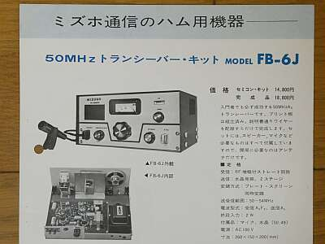
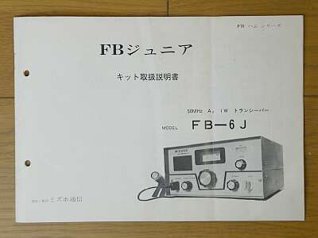
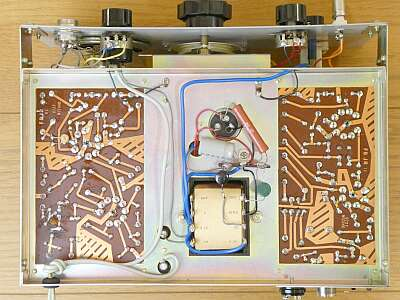
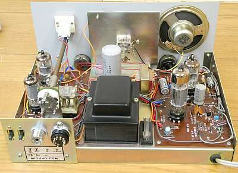
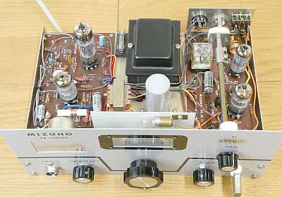

 |
当時の発売元 大和無線電機のパンフレット
Kitの価格 ￥１４，８００ と、なっています
資料によると、ＪＡ１ＡＭＨ高田ＯＭは、技術顧問という肩書で在籍していらしたようです
このパンフレットでは、基板は１枚に紹介されていますが、実際は送受２枚に分かれていて、その中央に電源部が配してあります |
 |
商品に付属の説明書も、一緒に入手できました
貴重なことです
説明書では、シャックの作り方のイメージやアンテナについての説明も書かれています
入門者を意識した内容となっています
もちろん開設申請書の書き方も・・・ |
 |
上蓋（上ケース）を取り外した状態です
基板は、送受２枚に分かれていて、中央に電源部が配してあります
右が受信基板
上が高周波／検波段、下が低周波増幅部（送信兼）
左が送信基板
上が発振部、下が終段部
|
 |
下蓋（下ケース）を取り外した状態です
基板は、送受２枚に分かれていて、中央に電源部が配してあります
左が受信基板
右が送信基板
受信ダイヤルは、糸掛け方式でポリＶＣを駆動しています |
|  |
リア側からシャーシ上面を写したもの
ヒューズ・ホルダは、シャーシ上に配してあります
左に見えるタイトＶＣは、終段同調用です |
 |
フロント側からシャーシ上を写したもの
照明ランプは、受信ダイヤルを対象にした一つだけ
メーターは、送信のＲＦ出力を表示するもので、この振れを最大にするようＦＩＮＡＬツマミを回す・・・です |
|
年期の割に、保存状態は非常に良いもので、かつ資料・・・ここまでの経緯が分かるものが付属していました
本機は、大和無線電機が発売をスタートした時点で、ＪＡＲＬ支部に寄贈したもののようです(S/Nは未記載）
その状態ですが、マイクの付属は無く､付いてきたクリスタルはアマチュアバンド外のもので、これではダミーロードでしかテストはできません
トラブル
受信に関しては、周波数以外の大きな問題はありませんでしたが、音が歪む・・・
原因は、６ＢＭ８の段間を接続するオイルコンデンサの絶縁不良
プラスの電圧が５極部第一グリッドにかかっていました（この状態で、送信時の音も酷かった）
送信するとパワーは出ます（周波数がアマチュアバンド外ですが１Ｗは出ています）
が、変調が浅い
電解コンデンサ２個と、プリアンプのトランジスタ１個を交換
あとはアマチュアバンド内のクリスタルの入手・・・これが思うようにいかず、３度目の正直でやっと一発発振するクリスタルに出会えました
HC-49/Uだったので、発振しないHC-6/Uのケースを分解して中に収め、ケースを再取付（半田付）しました |
さて、最後はお決まりのスペック紹介
まず受信感度
方式上クエンチング・ノイズがありますから、いくらの信号入力でＳ／Ｎいくらという表現には向きません
規格は、１０μＶ とあります
実際に、ＳＳＧから１０００Hz３０％変調のＡＭ信号を発生させ受信すると、２μＶの信号を耳で聞くことが出来ます
ＦＭも同様に受信できます
送信は、１Ｗ強
方式上、受信の選択度には全く期待は持てませんが、混信さえなければそこそこのＱＳＯが可能な性能を有しているということになります
いろんな意味で、アマチュア無線入門者向けと言える製品かと思います
そして記念すべきミズホ通信製品第一号です |